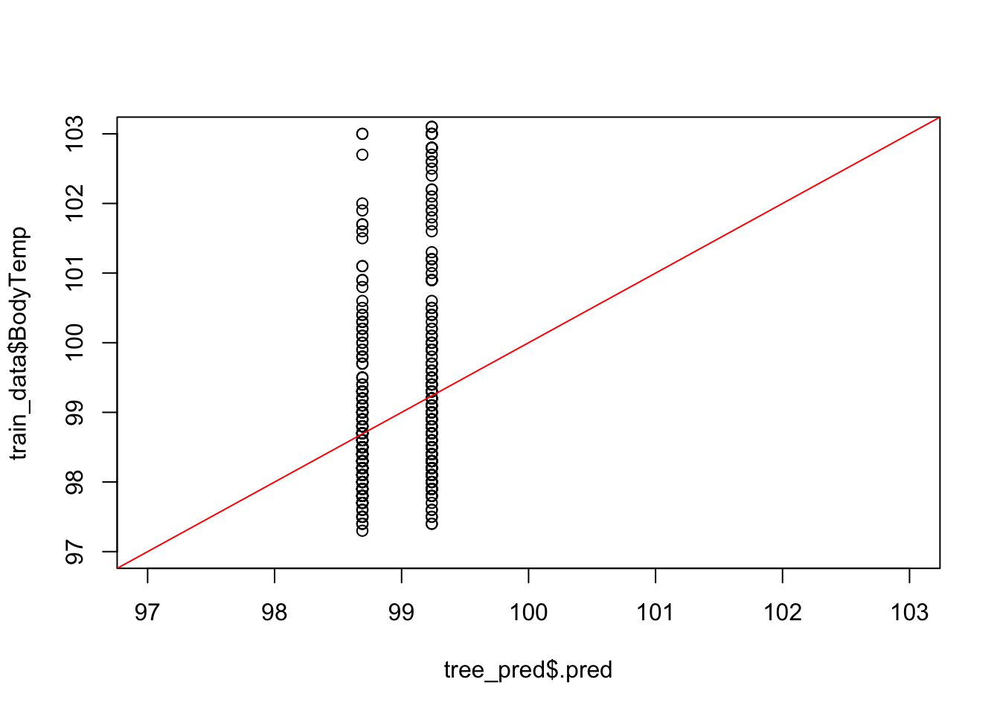
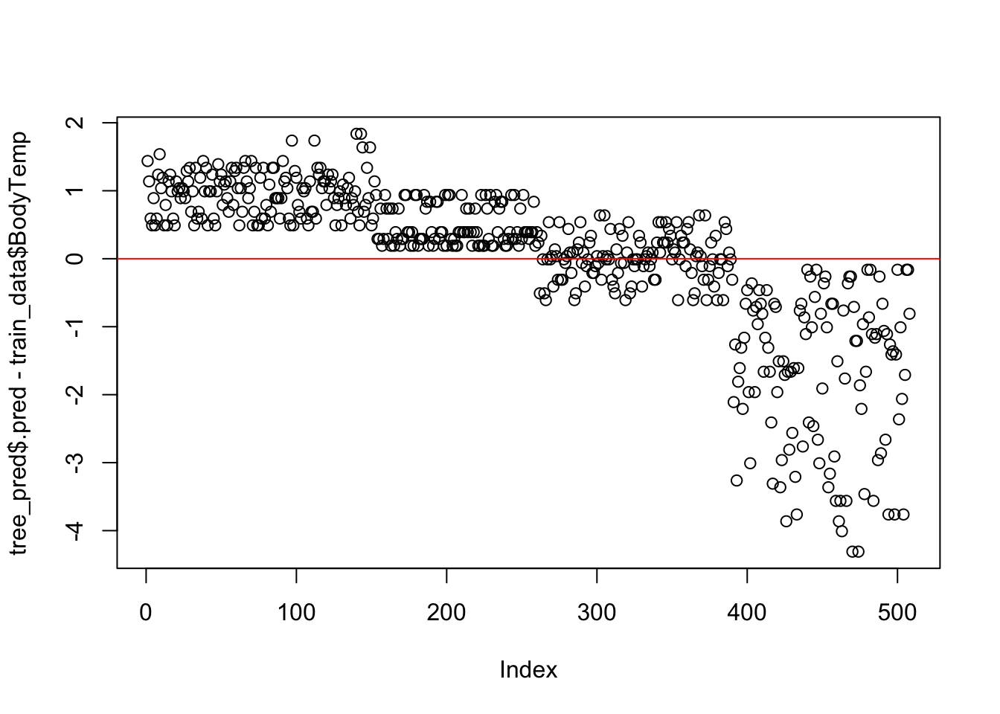
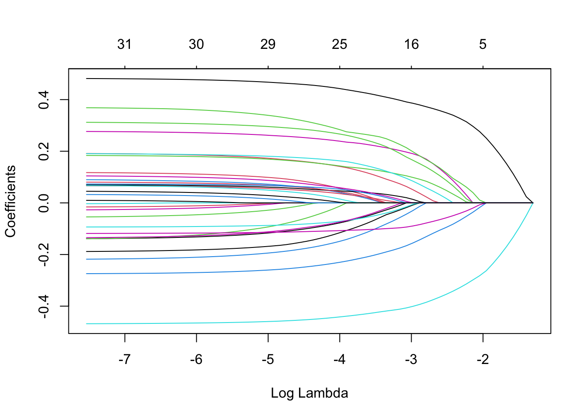
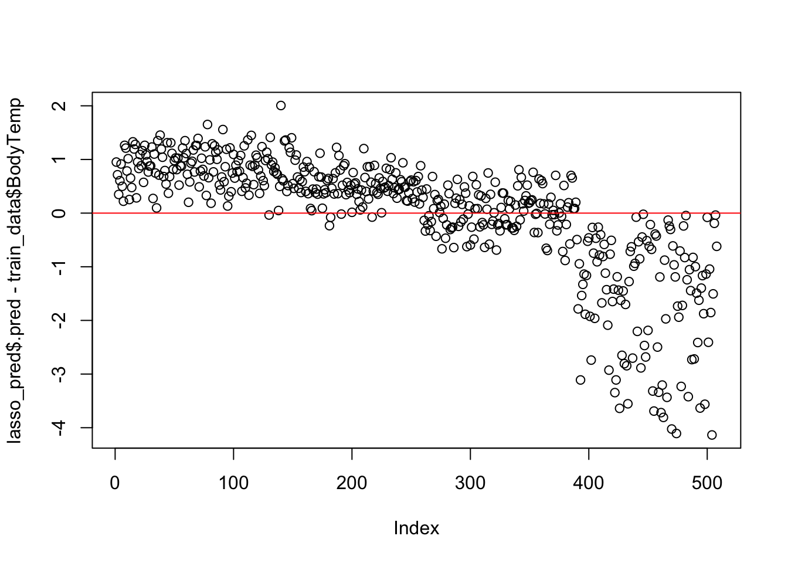
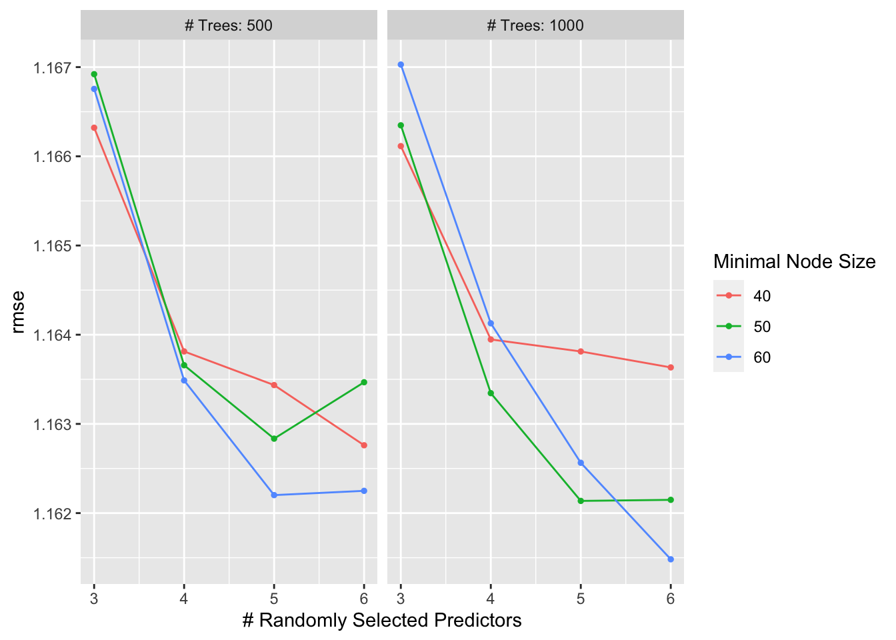
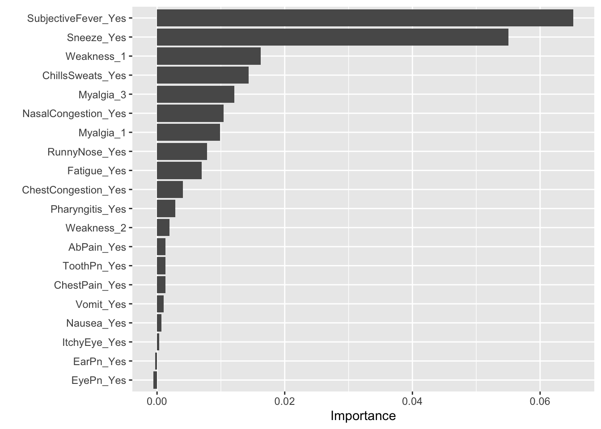
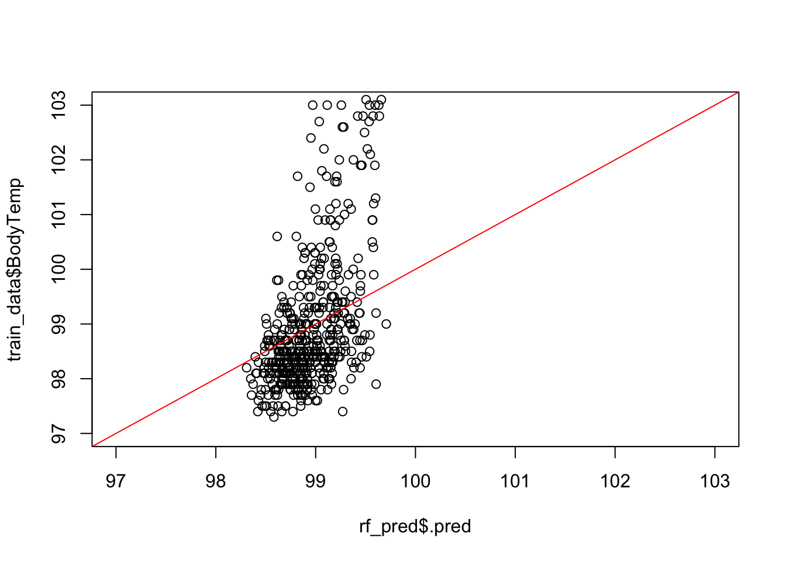
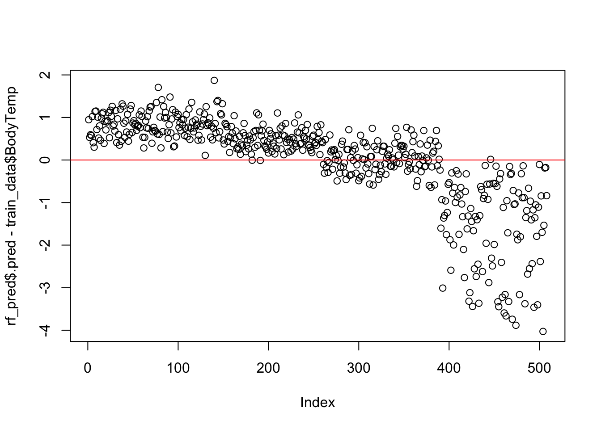
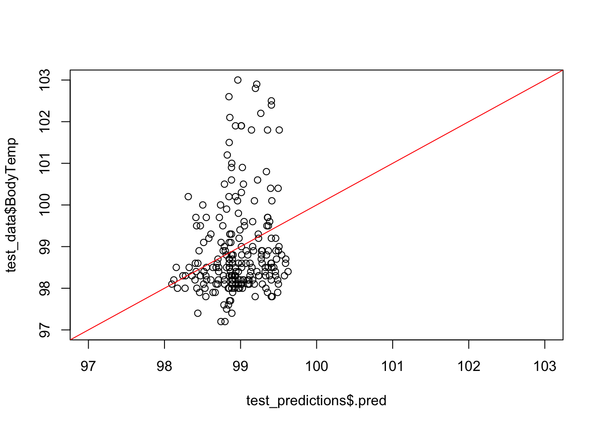

analysis3_ML
Ehsan
11/5/2021
##
## Attaching package: 'dplyr'## The following objects are masked from 'package:stats':
##
## filter, lag## The following objects are masked from 'package:base':
##
## intersect, setdiff, setequal, union## here() starts at /Users/ehsansuez/Study /MADA_2021/Ehsan_Suez-MADA-portfolio##
## Attaching package: 'recipes'## The following object is masked from 'package:stats':
##
## step## Registered S3 method overwritten by 'tune':
## method from
## required_pkgs.model_spec parsnip## ── Attaching packages ────────────────────────────────────── tidymodels 0.1.3 ──## ✓ dials 0.0.9 ✓ tibble 3.1.4
## ✓ ggplot2 3.3.5 ✓ tidyr 1.1.3
## ✓ infer 1.0.0 ✓ tune 0.1.6
## ✓ modeldata 0.1.1 ✓ workflows 0.2.3
## ✓ parsnip 0.1.7 ✓ workflowsets 0.1.0
## ✓ purrr 0.3.4 ✓ yardstick 0.0.8## ── Conflicts ───────────────────────────────────────── tidymodels_conflicts() ──
## x purrr::discard() masks scales::discard()
## x dplyr::filter() masks stats::filter()
## x dplyr::lag() masks stats::lag()
## x recipes::step() masks stats::step()
## • Use tidymodels_prefer() to resolve common conflicts.##
## Attaching package: 'table1'## The following objects are masked from 'package:base':
##
## units, units<-##
## Attaching package: 'rpart'## The following object is masked from 'package:dials':
##
## prune## Loading required package: foreach##
## Attaching package: 'foreach'## The following objects are masked from 'package:purrr':
##
## accumulate, when## Loading required package: iterators## Loading required package: parallel##
## Attaching package: 'vip'## The following object is masked from 'package:utils':
##
## vi#locating the data
data_location <-here::here("files","processed_data","processeddata.rds")
data <- readRDS(data_location)#have a look at the data
## Rows: 730
## Columns: 32
## $ SwollenLymphNodes <fct> Yes, Yes, Yes, Yes, Yes, No, No, No, Yes, No, Yes, Y…
## $ ChestCongestion <fct> No, Yes, Yes, Yes, No, No, No, Yes, Yes, Yes, Yes, Y…
## $ ChillsSweats <fct> No, No, Yes, Yes, Yes, Yes, Yes, Yes, Yes, No, Yes, …
## $ NasalCongestion <fct> No, Yes, Yes, Yes, No, No, No, Yes, Yes, Yes, Yes, Y…
## $ CoughYN <fct> Yes, Yes, No, Yes, No, Yes, Yes, Yes, Yes, Yes, No, …
## $ Sneeze <fct> No, No, Yes, Yes, No, Yes, No, Yes, No, No, No, No, …
## $ Fatigue <fct> Yes, Yes, Yes, Yes, Yes, Yes, Yes, Yes, Yes, Yes, Ye…
## $ SubjectiveFever <fct> Yes, Yes, Yes, Yes, Yes, Yes, Yes, Yes, Yes, No, Yes…
## $ Headache <fct> Yes, Yes, Yes, Yes, Yes, Yes, No, Yes, Yes, Yes, Yes…
## $ Weakness <fct> Mild, Severe, Severe, Severe, Moderate, Moderate, Mi…
## $ WeaknessYN <fct> Yes, Yes, Yes, Yes, Yes, Yes, Yes, Yes, Yes, Yes, Ye…
## $ CoughIntensity <fct> Severe, Severe, Mild, Moderate, None, Moderate, Seve…
## $ CoughYN2 <fct> Yes, Yes, Yes, Yes, No, Yes, Yes, Yes, Yes, Yes, Yes…
## $ Myalgia <fct> Mild, Severe, Severe, Severe, Mild, Moderate, Mild, …
## $ MyalgiaYN <fct> Yes, Yes, Yes, Yes, Yes, Yes, Yes, Yes, Yes, Yes, Ye…
## $ RunnyNose <fct> No, No, Yes, Yes, No, No, Yes, Yes, Yes, Yes, No, No…
## $ AbPain <fct> No, No, Yes, No, No, No, No, No, No, No, Yes, Yes, N…
## $ ChestPain <fct> No, No, Yes, No, No, Yes, Yes, No, No, No, No, Yes, …
## $ Diarrhea <fct> No, No, No, No, No, Yes, No, No, No, No, No, No, No,…
## $ EyePn <fct> No, No, No, No, Yes, No, No, No, No, No, Yes, No, Ye…
## $ Insomnia <fct> No, No, Yes, Yes, Yes, No, No, Yes, Yes, Yes, Yes, Y…
## $ ItchyEye <fct> No, No, No, No, No, No, No, No, No, No, No, No, Yes,…
## $ Nausea <fct> No, No, Yes, Yes, Yes, Yes, No, No, Yes, Yes, Yes, Y…
## $ EarPn <fct> No, Yes, No, Yes, No, No, No, No, No, No, No, Yes, Y…
## $ Hearing <fct> No, Yes, No, No, No, No, No, No, No, No, No, No, No,…
## $ Pharyngitis <fct> Yes, Yes, Yes, Yes, Yes, Yes, Yes, No, No, No, Yes, …
## $ Breathless <fct> No, No, Yes, No, No, Yes, No, No, No, Yes, No, Yes, …
## $ ToothPn <fct> No, No, Yes, No, No, No, No, No, Yes, No, No, Yes, N…
## $ Vision <fct> No, No, No, No, No, No, No, No, No, No, No, No, No, …
## $ Vomit <fct> No, No, No, No, No, No, Yes, No, No, No, Yes, Yes, N…
## $ Wheeze <fct> No, No, No, Yes, No, Yes, No, No, No, No, No, Yes, N…
## $ BodyTemp <dbl> 98.3, 100.4, 100.8, 98.8, 100.5, 98.4, 102.5, 98.4, …#Part 1: Preprocessing #Preprocessing: Feature removal. Removing coughYN, coughYN2 and myalgiaYn columns.
#checking of the number of columns actually got reduced or not
## Rows: 730
## Columns: 28
## $ SwollenLymphNodes <fct> Yes, Yes, Yes, Yes, Yes, No, No, No, Yes, No, Yes, Y…
## $ ChestCongestion <fct> No, Yes, Yes, Yes, No, No, No, Yes, Yes, Yes, Yes, Y…
## $ ChillsSweats <fct> No, No, Yes, Yes, Yes, Yes, Yes, Yes, Yes, No, Yes, …
## $ NasalCongestion <fct> No, Yes, Yes, Yes, No, No, No, Yes, Yes, Yes, Yes, Y…
## $ Sneeze <fct> No, No, Yes, Yes, No, Yes, No, Yes, No, No, No, No, …
## $ Fatigue <fct> Yes, Yes, Yes, Yes, Yes, Yes, Yes, Yes, Yes, Yes, Ye…
## $ SubjectiveFever <fct> Yes, Yes, Yes, Yes, Yes, Yes, Yes, Yes, Yes, No, Yes…
## $ Headache <fct> Yes, Yes, Yes, Yes, Yes, Yes, No, Yes, Yes, Yes, Yes…
## $ Weakness <fct> Mild, Severe, Severe, Severe, Moderate, Moderate, Mi…
## $ CoughIntensity <fct> Severe, Severe, Mild, Moderate, None, Moderate, Seve…
## $ Myalgia <fct> Mild, Severe, Severe, Severe, Mild, Moderate, Mild, …
## $ RunnyNose <fct> No, No, Yes, Yes, No, No, Yes, Yes, Yes, Yes, No, No…
## $ AbPain <fct> No, No, Yes, No, No, No, No, No, No, No, Yes, Yes, N…
## $ ChestPain <fct> No, No, Yes, No, No, Yes, Yes, No, No, No, No, Yes, …
## $ Diarrhea <fct> No, No, No, No, No, Yes, No, No, No, No, No, No, No,…
## $ EyePn <fct> No, No, No, No, Yes, No, No, No, No, No, Yes, No, Ye…
## $ Insomnia <fct> No, No, Yes, Yes, Yes, No, No, Yes, Yes, Yes, Yes, Y…
## $ ItchyEye <fct> No, No, No, No, No, No, No, No, No, No, No, No, Yes,…
## $ Nausea <fct> No, No, Yes, Yes, Yes, Yes, No, No, Yes, Yes, Yes, Y…
## $ EarPn <fct> No, Yes, No, Yes, No, No, No, No, No, No, No, Yes, Y…
## $ Hearing <fct> No, Yes, No, No, No, No, No, No, No, No, No, No, No,…
## $ Pharyngitis <fct> Yes, Yes, Yes, Yes, Yes, Yes, Yes, No, No, No, Yes, …
## $ Breathless <fct> No, No, Yes, No, No, Yes, No, No, No, Yes, No, Yes, …
## $ ToothPn <fct> No, No, Yes, No, No, No, No, No, Yes, No, No, Yes, N…
## $ Vision <fct> No, No, No, No, No, No, No, No, No, No, No, No, No, …
## $ Vomit <fct> No, No, No, No, No, No, Yes, No, No, No, Yes, Yes, N…
## $ Wheeze <fct> No, No, No, Yes, No, Yes, No, No, No, No, No, Yes, N…
## $ BodyTemp <dbl> 98.3, 100.4, 100.8, 98.8, 100.5, 98.4, 102.5, 98.4, …#ordering factors for Weakness, CoughIntensity, Myalgia
data_2 <- mutate(data_1, Weakness = factor(Weakness, levels = c("None", "Mild","Moderate","Severe"),ordered = TRUE))
data_3 <- mutate(data_2, CoughIntensity = factor(CoughIntensity, levels = c("None", "Mild", "Moderate","Severe"),ordered = TRUE))
data_4 <- mutate(data_3, Myalgia = factor(Myalgia, levels = c("None", "Mild", "Moderate","Severe"),ordered = TRUE))#checking if those three coumn are actually ordered or not.
| Name | data_4 |
| Number of rows | 730 |
| Number of columns | 28 |
| _______________________ | |
| Column type frequency: | |
| factor | 27 |
| numeric | 1 |
| ________________________ | |
| Group variables | None |
Variable type: factor
| skim_variable | n_missing | complete_rate | ordered | n_unique | top_counts |
|---|---|---|---|---|---|
| SwollenLymphNodes | 0 | 1 | FALSE | 2 | No: 418, Yes: 312 |
| ChestCongestion | 0 | 1 | FALSE | 2 | Yes: 407, No: 323 |
| ChillsSweats | 0 | 1 | FALSE | 2 | Yes: 600, No: 130 |
| NasalCongestion | 0 | 1 | FALSE | 2 | Yes: 563, No: 167 |
| Sneeze | 0 | 1 | FALSE | 2 | Yes: 391, No: 339 |
| Fatigue | 0 | 1 | FALSE | 2 | Yes: 666, No: 64 |
| SubjectiveFever | 0 | 1 | FALSE | 2 | Yes: 500, No: 230 |
| Headache | 0 | 1 | FALSE | 2 | Yes: 615, No: 115 |
| Weakness | 0 | 1 | TRUE | 4 | Mod: 338, Mil: 223, Sev: 120, Non: 49 |
| CoughIntensity | 0 | 1 | TRUE | 4 | Mod: 357, Sev: 172, Mil: 154, Non: 47 |
| Myalgia | 0 | 1 | TRUE | 4 | Mod: 325, Mil: 213, Sev: 113, Non: 79 |
| RunnyNose | 0 | 1 | FALSE | 2 | Yes: 519, No: 211 |
| AbPain | 0 | 1 | FALSE | 2 | No: 639, Yes: 91 |
| ChestPain | 0 | 1 | FALSE | 2 | No: 497, Yes: 233 |
| Diarrhea | 0 | 1 | FALSE | 2 | No: 631, Yes: 99 |
| EyePn | 0 | 1 | FALSE | 2 | No: 617, Yes: 113 |
| Insomnia | 0 | 1 | FALSE | 2 | Yes: 415, No: 315 |
| ItchyEye | 0 | 1 | FALSE | 2 | No: 551, Yes: 179 |
| Nausea | 0 | 1 | FALSE | 2 | No: 475, Yes: 255 |
| EarPn | 0 | 1 | FALSE | 2 | No: 568, Yes: 162 |
| Hearing | 0 | 1 | FALSE | 2 | No: 700, Yes: 30 |
| Pharyngitis | 0 | 1 | FALSE | 2 | Yes: 611, No: 119 |
| Breathless | 0 | 1 | FALSE | 2 | No: 436, Yes: 294 |
| ToothPn | 0 | 1 | FALSE | 2 | No: 565, Yes: 165 |
| Vision | 0 | 1 | FALSE | 2 | No: 711, Yes: 19 |
| Vomit | 0 | 1 | FALSE | 2 | No: 652, Yes: 78 |
| Wheeze | 0 | 1 | FALSE | 2 | No: 510, Yes: 220 |
Variable type: numeric
| skim_variable | n_missing | complete_rate | mean | sd | p0 | p25 | p50 | p75 | p100 | hist |
|---|---|---|---|---|---|---|---|---|---|---|
| BodyTemp | 0 | 1 | 98.94 | 1.2 | 97.2 | 98.2 | 98.5 | 99.3 | 103.1 | ▇▇▂▁▁ |
#Finding out which categories have less than 50 inputs
| Total (N=730) |
|
|---|---|
| Swollen Lymph Nodes | |
| No | 418 (57.3%) |
| Yes | 312 (42.7%) |
| Chest Congestion | |
| No | 323 (44.2%) |
| Yes | 407 (55.8%) |
| Chills/Sweats | |
| No | 130 (17.8%) |
| Yes | 600 (82.2%) |
| Nasal Congestion | |
| No | 167 (22.9%) |
| Yes | 563 (77.1%) |
| Sneeze | |
| No | 339 (46.4%) |
| Yes | 391 (53.6%) |
| Fatigue | |
| No | 64 (8.8%) |
| Yes | 666 (91.2%) |
| Subjective Fever | |
| No | 230 (31.5%) |
| Yes | 500 (68.5%) |
| Headache | |
| No | 115 (15.8%) |
| Yes | 615 (84.2%) |
| Weakness | |
| None | 49 (6.7%) |
| Mild | 223 (30.5%) |
| Moderate | 338 (46.3%) |
| Severe | 120 (16.4%) |
| CoughIntensity | |
| None | 47 (6.4%) |
| Mild | 154 (21.1%) |
| Moderate | 357 (48.9%) |
| Severe | 172 (23.6%) |
| Myalgia | |
| None | 79 (10.8%) |
| Mild | 213 (29.2%) |
| Moderate | 325 (44.5%) |
| Severe | 113 (15.5%) |
| Runny Nose | |
| No | 211 (28.9%) |
| Yes | 519 (71.1%) |
| Abdominal Pain | |
| No | 639 (87.5%) |
| Yes | 91 (12.5%) |
| Chest Pain | |
| No | 497 (68.1%) |
| Yes | 233 (31.9%) |
| Diarrhea | |
| No | 631 (86.4%) |
| Yes | 99 (13.6%) |
| Eye Pain | |
| No | 617 (84.5%) |
| Yes | 113 (15.5%) |
| Sleeplessness | |
| No | 315 (43.2%) |
| Yes | 415 (56.8%) |
| Itchy Eyes | |
| No | 551 (75.5%) |
| Yes | 179 (24.5%) |
| Nausea | |
| No | 475 (65.1%) |
| Yes | 255 (34.9%) |
| Ear Pain | |
| No | 568 (77.8%) |
| Yes | 162 (22.2%) |
| Loss of Hearing | |
| No | 700 (95.9%) |
| Yes | 30 (4.1%) |
| Sore Throat | |
| No | 119 (16.3%) |
| Yes | 611 (83.7%) |
| Breathlessness | |
| No | 436 (59.7%) |
| Yes | 294 (40.3%) |
| Tooth Pain | |
| No | 565 (77.4%) |
| Yes | 165 (22.6%) |
| Blurred Vision | |
| No | 711 (97.4%) |
| Yes | 19 (2.6%) |
| Vomiting | |
| No | 652 (89.3%) |
| Yes | 78 (10.7%) |
| Wheezing | |
| No | 510 (69.9%) |
| Yes | 220 (30.1%) |
| BodyTemp | |
| Mean (SD) | 98.9 (1.20) |
| Median [Min, Max] | 98.5 [97.2, 103] |
#dropping the two column that have <50 inputs
#checking if it was removed successfully
## Rows: 730
## Columns: 26
## $ SwollenLymphNodes <fct> Yes, Yes, Yes, Yes, Yes, No, No, No, Yes, No, Yes, Y…
## $ ChestCongestion <fct> No, Yes, Yes, Yes, No, No, No, Yes, Yes, Yes, Yes, Y…
## $ ChillsSweats <fct> No, No, Yes, Yes, Yes, Yes, Yes, Yes, Yes, No, Yes, …
## $ NasalCongestion <fct> No, Yes, Yes, Yes, No, No, No, Yes, Yes, Yes, Yes, Y…
## $ Sneeze <fct> No, No, Yes, Yes, No, Yes, No, Yes, No, No, No, No, …
## $ Fatigue <fct> Yes, Yes, Yes, Yes, Yes, Yes, Yes, Yes, Yes, Yes, Ye…
## $ SubjectiveFever <fct> Yes, Yes, Yes, Yes, Yes, Yes, Yes, Yes, Yes, No, Yes…
## $ Headache <fct> Yes, Yes, Yes, Yes, Yes, Yes, No, Yes, Yes, Yes, Yes…
## $ Weakness <ord> Mild, Severe, Severe, Severe, Moderate, Moderate, Mi…
## $ CoughIntensity <ord> Severe, Severe, Mild, Moderate, None, Moderate, Seve…
## $ Myalgia <ord> Mild, Severe, Severe, Severe, Mild, Moderate, Mild, …
## $ RunnyNose <fct> No, No, Yes, Yes, No, No, Yes, Yes, Yes, Yes, No, No…
## $ AbPain <fct> No, No, Yes, No, No, No, No, No, No, No, Yes, Yes, N…
## $ ChestPain <fct> No, No, Yes, No, No, Yes, Yes, No, No, No, No, Yes, …
## $ Diarrhea <fct> No, No, No, No, No, Yes, No, No, No, No, No, No, No,…
## $ EyePn <fct> No, No, No, No, Yes, No, No, No, No, No, Yes, No, Ye…
## $ Insomnia <fct> No, No, Yes, Yes, Yes, No, No, Yes, Yes, Yes, Yes, Y…
## $ ItchyEye <fct> No, No, No, No, No, No, No, No, No, No, No, No, Yes,…
## $ Nausea <fct> No, No, Yes, Yes, Yes, Yes, No, No, Yes, Yes, Yes, Y…
## $ EarPn <fct> No, Yes, No, Yes, No, No, No, No, No, No, No, Yes, Y…
## $ Pharyngitis <fct> Yes, Yes, Yes, Yes, Yes, Yes, Yes, No, No, No, Yes, …
## $ Breathless <fct> No, No, Yes, No, No, Yes, No, No, No, Yes, No, Yes, …
## $ ToothPn <fct> No, No, Yes, No, No, No, No, No, Yes, No, No, Yes, N…
## $ Vomit <fct> No, No, No, No, No, No, Yes, No, No, No, Yes, Yes, N…
## $ Wheeze <fct> No, No, No, Yes, No, Yes, No, No, No, No, No, Yes, N…
## $ BodyTemp <dbl> 98.3, 100.4, 100.8, 98.8, 100.5, 98.4, 102.5, 98.4, …#Part2: Analysis #set random seed to 123
Put 70% of the data into the training set and 30% into testing using strata=BodyTemp
Create data frames for the two sets:
training set proportions by class
## BodyTemp n prop
## 1 97.3 1 0.001968504
## 2 97.4 5 0.009842520
## 3 97.5 8 0.015748031
## 4 97.6 5 0.009842520
## 5 97.7 12 0.023622047
## 6 97.8 19 0.037401575
## 7 97.9 23 0.045275591
## 8 98.0 18 0.035433071
## 9 98.1 29 0.057086614
## 10 98.2 32 0.062992126
## 11 98.3 42 0.082677165
## 12 98.4 29 0.057086614
## 13 98.5 37 0.072834646
## 14 98.6 14 0.027559055
## 15 98.7 28 0.055118110
## 16 98.8 15 0.029527559
## 17 98.9 13 0.025590551
## 18 99.0 21 0.041338583
## 19 99.1 11 0.021653543
## 20 99.2 15 0.029527559
## 21 99.3 13 0.025590551
## 22 99.4 10 0.019685039
## 23 99.5 8 0.015748031
## 24 99.6 3 0.005905512
## 25 99.7 6 0.011811024
## 26 99.8 5 0.009842520
## 27 99.9 9 0.017716535
## 28 100.0 5 0.009842520
## 29 100.1 4 0.007874016
## 30 100.2 5 0.009842520
## 31 100.3 4 0.007874016
## 32 100.4 5 0.009842520
## 33 100.5 3 0.005905512
## 34 100.6 2 0.003937008
## 35 100.8 1 0.001968504
## 36 100.9 7 0.013779528
## 37 101.0 1 0.001968504
## 38 101.1 3 0.005905512
## 39 101.2 3 0.005905512
## 40 101.3 1 0.001968504
## 41 101.5 1 0.001968504
## 42 101.6 2 0.003937008
## 43 101.7 3 0.005905512
## 44 101.8 1 0.001968504
## 45 101.9 3 0.005905512
## 46 102.0 2 0.003937008
## 47 102.1 1 0.001968504
## 48 102.2 2 0.003937008
## 49 102.4 1 0.001968504
## 50 102.5 1 0.001968504
## 51 102.6 2 0.003937008
## 52 102.7 2 0.003937008
## 53 102.8 4 0.007874016
## 54 103.0 6 0.011811024
## 55 103.1 2 0.003937008test set proportions by class
## BodyTemp n prop
## 1 97.2 2 0.009009009
## 2 97.4 2 0.009009009
## 3 97.5 1 0.004504505
## 4 97.6 2 0.009009009
## 5 97.7 2 0.009009009
## 6 97.8 4 0.018018018
## 7 97.9 6 0.027027027
## 8 98.0 12 0.054054054
## 9 98.1 17 0.076576577
## 10 98.2 18 0.081081081
## 11 98.3 20 0.090090090
## 12 98.4 11 0.049549550
## 13 98.5 16 0.072072072
## 14 98.6 13 0.058558559
## 15 98.7 7 0.031531532
## 16 98.8 9 0.040540541
## 17 98.9 10 0.045045045
## 18 99.0 4 0.018018018
## 19 99.1 4 0.018018018
## 20 99.2 5 0.022522523
## 21 99.3 5 0.022522523
## 22 99.4 1 0.004504505
## 23 99.5 6 0.027027027
## 24 99.6 3 0.013513514
## 25 99.7 5 0.022522523
## 26 99.8 1 0.004504505
## 27 99.9 1 0.004504505
## 28 100.0 2 0.009009009
## 29 100.1 3 0.013513514
## 30 100.2 3 0.013513514
## 31 100.3 1 0.004504505
## 32 100.4 2 0.009009009
## 33 100.5 2 0.009009009
## 34 100.6 2 0.009009009
## 35 100.8 1 0.004504505
## 36 100.9 2 0.009009009
## 37 101.0 1 0.004504505
## 38 101.2 1 0.004504505
## 39 101.5 1 0.004504505
## 40 101.8 3 0.013513514
## 41 101.9 3 0.013513514
## 42 102.1 1 0.004504505
## 43 102.2 1 0.004504505
## 44 102.4 1 0.004504505
## 45 102.5 1 0.004504505
## 46 102.6 1 0.004504505
## 47 102.8 1 0.004504505
## 48 102.9 1 0.004504505
## 49 103.0 1 0.004504505##5-fold cross validation, 5 times repeated, stratified on BodyTemp for the CV folds
#create recipe that codes categorical variables as dummy variables
PArt 2: Building Null model
For a continuous outcome, using RMSE as our performance metric, a null-model that doesn’t use any predictor information is one that always just predicts the mean of the data. We’ll compute the performance of such a “model” here. It’s useful for comparison with the real models. We’ll print both numbers here, and then compare with our model results below. Since our performance metric is RMSE, we compute that here with the “model prediction” always just being the mean of the outcomes.
RMSE_null_train <- sqrt(sum( (train_data$BodyTemp - mean(train_data$BodyTemp))^2 )/nrow(train_data))
RMSE_null_test <- sqrt(sum( (test_data$BodyTemp - mean(test_data$BodyTemp))^2 )/nrow(test_data))
print(RMSE_null_train)## [1] 1.209327## [1] 1.163334#part 3: We’ll use three models
#3.1: Tree model #define the tree model [code from https://www.tidymodels.org/start/tuning/]
tune_spec <-
decision_tree(
cost_complexity = tune(),
tree_depth = tune(),
) %>%
set_engine("rpart") %>%
set_mode("regression") ##'regression' instead of 'classification'
tune_spec## Decision Tree Model Specification (regression)
##
## Main Arguments:
## cost_complexity = tune()
## tree_depth = tune()
##
## Computational engine: rparttuning grid specification
#define workflow for tree
tree_workflow <- workflow() %>%
add_model(tune_spec) %>%
add_recipe(flu_recipe) #recipe from line 95#for parallel computing
#makes things faster. If not wanted, can be commented out, together with last line of this block.
ncores = 18 #adjust based on your computer.
cl <- makePSOCKcluster(ncores)
registerDoParallel(cl)
# tuning using cross-validation and the tune_grid() function
tree_res <-
tree_workflow %>%
tune_grid(resamples = folds, grid = tree_grid, metric_set(rmse))## Warning: The `...` are not used in this function but one or more objects were
## passed: ''#plotting metrics
 #finding best model
#finding best model
## # A tibble: 1 × 3
## cost_complexity tree_depth .config
## <dbl> <int> <chr>
## 1 0.0000000001 1 Preprocessor1_Model01#finalize workflow
## ══ Workflow ════════════════════════════════════════════════════════════════════
## Preprocessor: Recipe
## Model: decision_tree()
##
## ── Preprocessor ────────────────────────────────────────────────────────────────
## 1 Recipe Step
##
## • step_dummy()
##
## ── Model ───────────────────────────────────────────────────────────────────────
## Decision Tree Model Specification (regression)
##
## Main Arguments:
## cost_complexity = 1e-10
## tree_depth = 1
##
## Computational engine: rpartfinal workflow using the fit() function
#predicting outcomes for final model
#Plotting final tree.
## Warning: Cannot retrieve the data used to build the model (model.frame: object '..y' not found).
## To silence this warning:
## Call rpart.plot with roundint=FALSE,
## or rebuild the rpart model with model=TRUE.
Plotting observed/predicted and residuals.
#predicted versus observed
plot(tree_pred$.pred,train_data$BodyTemp, xlim =c(97,103), ylim=c(97,103))
abline(a=0,b=1, col = 'red') #45 degree line, along which the results should fall
#residuals
plot(tree_pred$.pred-train_data$BodyTemp)
abline(a=0,b=0, col = 'red') #straight line, along which the results should fall
#tree performance
## Warning: No value of `metric` was given; metric 'rmse' will be used.## # A tibble: 1 × 8
## cost_complexity tree_depth .metric .estimator mean n std_err .config
## <dbl> <int> <chr> <chr> <dbl> <int> <dbl> <chr>
## 1 0.0000000001 1 rmse standard 1.19 25 0.0181 Preprocesso…#Comparing the RMSE to the null model, we see that it is not much better. Based on our model evaluation, I think we can safely say here that a tree-based model is no good. # Make two plots, model predictions from the tuned model versus actual outcomes
LASSO linear model
Repeating the steps above, now for LASSO.
LASSO setup
#model
lasso_model <- linear_reg() %>%
set_mode("regression") %>%
set_engine("glmnet") %>%
set_args(penalty = tune(), mixture = 1) #mixture = 1 means we use the LASSO model#workflow
LASSO tuning
#parallel computing
ncores = 10 #adjust based on your computer
cl <- makePSOCKcluster(ncores)
registerDoParallel(cl)
#tuning grid
lasso_reg_grid <- tibble(penalty = 10^seq(-3, 0, length.out = 30))
#tune model
lasso_tune_res <- lasso_wf %>%
tune_grid(resamples = folds,
grid = lasso_reg_grid,
control = control_grid(save_pred = TRUE),
metrics = metric_set(rmse)
)
# turn off parallel cluster
stopCluster(cl)LASSO evaluation

# get the tuned model that performs best
best_lasso <- lasso_tune_res %>% select_best(metric = "rmse")
# finalize workflow with best model
best_lasso_wf <- lasso_wf %>% finalize_workflow(best_lasso)
# fitting best performing model
best_lasso_fit <- best_lasso_wf %>%
fit(data = train_data)
lasso_pred <- predict(best_lasso_fit, train_data)Plotting LASSO variables as function of tuning parameter

## Loading required package: Matrix##
## Attaching package: 'Matrix'## The following objects are masked from 'package:tidyr':
##
## expand, pack, unpack## Loaded glmnet 4.1-2## # A tibble: 13 × 3
## term estimate penalty
## <chr> <dbl> <dbl>
## 1 (Intercept) 98.7 0.0574
## 2 ChestCongestion_Yes 0.0332 0.0574
## 3 ChillsSweats_Yes 0.0894 0.0574
## 4 NasalCongestion_Yes -0.140 0.0574
## 5 Sneeze_Yes -0.391 0.0574
## 6 Fatigue_Yes 0.178 0.0574
## 7 SubjectiveFever_Yes 0.377 0.0574
## 8 Weakness_1 0.178 0.0574
## 9 Myalgia_2 -0.00994 0.0574
## 10 Myalgia_3 0.0679 0.0574
## 11 RunnyNose_Yes -0.0825 0.0574
## 12 Nausea_Yes 0.00349 0.0574
## 13 Pharyngitis_Yes 0.148 0.0574Plotting observed/predicted and residuals.
#predicted versus observed
plot(lasso_pred$.pred,train_data$BodyTemp, xlim =c(97,103), ylim=c(97,103))
abline(a=0,b=1, col = 'red') #45 degree line, along which the results should fall
#residuals
plot(lasso_pred$.pred-train_data$BodyTemp)
abline(a=0,b=0, col = 'red') #straight line, along which the results should fall #We want the points to be along the red lines in each plot. They are not.this model isn’t much better either.
Looking at model performance.
## # A tibble: 1 × 7
## penalty .metric .estimator mean n std_err .config
## <dbl> <chr> <chr> <dbl> <int> <dbl> <chr>
## 1 0.0574 rmse standard 1.15 25 0.0169 Preprocessor1_Model18A somewhat lower RMSE, so a bit better performance.
Random forest model
Repeating the steps above, now for a random forest.
Random forest setup
rf_model <- rand_forest() %>%
set_args(mtry = tune(),
trees = tune(),
min_n = tune()
) %>%
# select the engine/package that underlies the model
set_engine("ranger",
num.threads = 18, #for some reason for RF, we need to set this in the engine too
importance = "permutation") %>%
# choose either the continuous regression or binary classification mode
set_mode("regression") Random forest tuning
#parallel computing
cl <- makePSOCKcluster(ncores)
registerDoParallel(cl)
#tuning grid
rf_grid <- expand.grid(mtry = c(3, 4, 5, 6), min_n = c(40,50,60), trees = c(500,1000) )
# tune the model, optimizing RMSE
rf_tune_res <- rf_wf %>%
tune_grid(
resamples = folds, #CV object
grid = rf_grid, # grid of values to try
metrics = metric_set(rmse)
)
# turn off parallel cluster
stopCluster(cl)Random forest evaluation

# get the tuned model that performs best
best_rf <- rf_tune_res %>% select_best(metric = "rmse")
# finalize workflow with best model
best_rf_wf <- rf_wf %>% finalize_workflow(best_rf)
# fitting best performing model
best_rf_fit <- best_rf_wf %>%
fit(data = train_data)
rf_pred <- predict(best_rf_fit, train_data)For random forest models, one can’t easily look at the final model. One can however look at the most important predictors for the final model.
#pull out the fit object
x <- best_rf_fit$fit$fit$fit
#plot variable importance
vip::vip(x, num_features = 20)
Plotting observed/predicted and residuals.
#predicted versus observed
plot(rf_pred$.pred,train_data$BodyTemp, xlim =c(97,103), ylim=c(97,103))
abline(a=0,b=1, col = 'red') #45 degree line, along which the results should fall
#residuals
plot(rf_pred$.pred-train_data$BodyTemp)
abline(a=0,b=0, col = 'red') #straight line, along which the results should fall
Looking at model performance.
## # A tibble: 1 × 9
## mtry trees min_n .metric .estimator mean n std_err .config
## <dbl> <dbl> <dbl> <chr> <chr> <dbl> <int> <dbl> <chr>
## 1 6 1000 60 rmse standard 1.16 25 0.0168 Preprocessor1_Model24#none of these models are actually any good.I’ll go with the simpler LASSO. So let’s give that model a final check.
Final Model Evaluation
We’ll now apply the model a single time to the test data.
cl <- makePSOCKcluster(ncores)
registerDoParallel(cl)
# fit on the training set and evaluate on test set
final_fit <- best_lasso_wf %>% last_fit(data_split)
stopCluster(cl)#performance check
## # A tibble: 2 × 4
## .metric .estimator .estimate .config
## <chr> <chr> <dbl> <chr>
## 1 rmse standard 1.15 Preprocessor1_Model1
## 2 rsq standard 0.0291 Preprocessor1_Model1#RMSE is almost same as training dta. So probably, we have avoided the risk of overfitting.
#And just another look at the diagnostic plots for the test data.
Plotting observed/predicted and residuals.
#predicted versus observed
plot(test_predictions$.pred,test_data$BodyTemp, xlim =c(97,103), ylim=c(97,103))
abline(a=0,b=1, col = 'red') #45 degree line, along which the results should fall
#residuals
plot(test_predictions$.pred-test_data$BodyTemp)
abline(a=0,b=0, col = 'red') #straight line, along which the results should fall
#none of the models turned out to be good at prediction with our data.